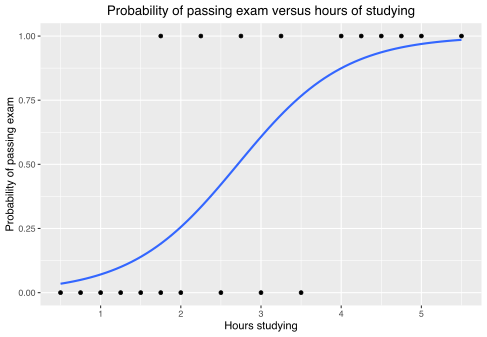
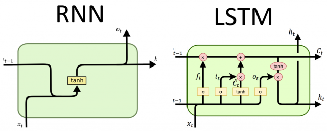
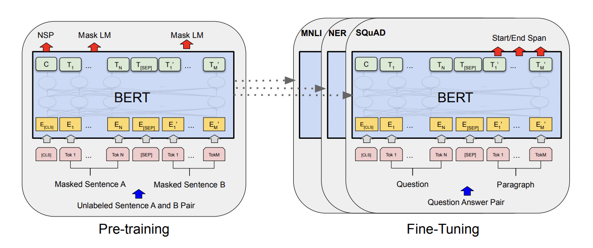
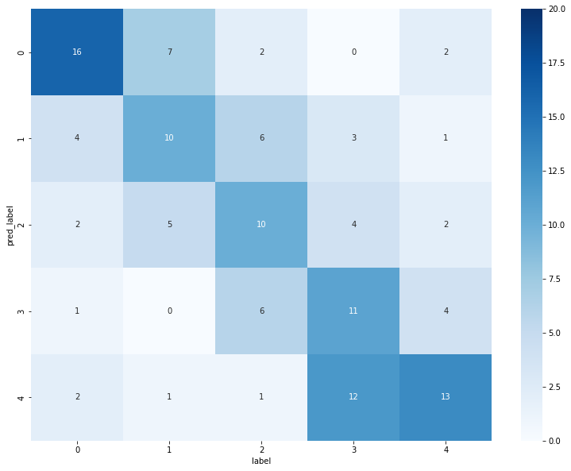
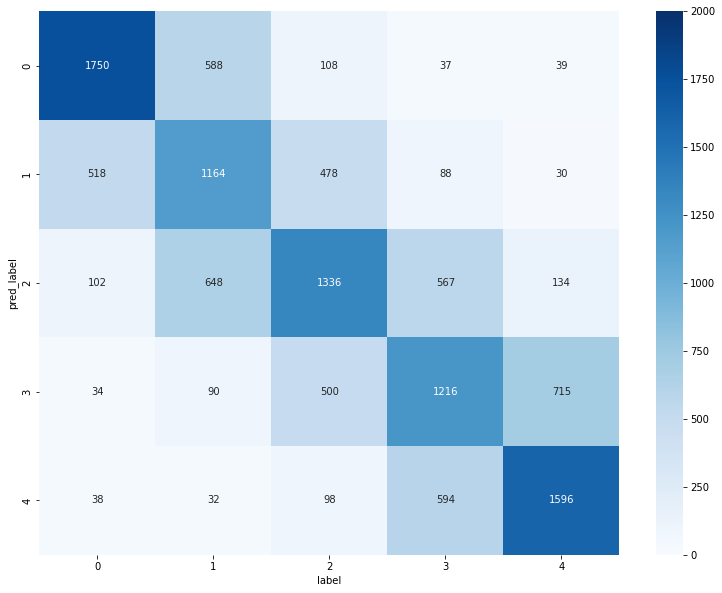
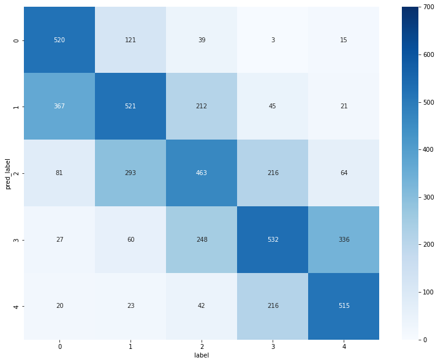

Explore three difference NLP models for Sentiment Analysis: Logistic Regression, LSTM and BERT

Sentiment Analysis can be useful for businesses to help understand sentiment in customer feedback or review for better understanding and improvement on the products efficiently. We are going to explore three different NLP models for Sentiment Analysis.
Three Models at a Glance
- Logistic Regression: A well known simple statistical model that use logistic function to represent probability of an occurrence.

- LSTM: Long Short-Term Memory (LSTM) developed to solve the memory lost problem of RNN on long sequence of data by providing a short-term memory for RNN that last a lot more, hence, it called “long” short-term memory.

- BERT: Bidirectional Encoder Representations from Transformers (BERT) developed by research team at Google. They fixed the shortage of training data problem, enable a training process to enormous amount of unannotated text plain text corpus like Wikipedia. Introducing “self-attention” technique, masking out some of the words in the input and predict the masked words and let the predictor use entire context make it truly efficient bidirectional training schema.

For full details about BERT model, refer to this publication: BERT: Pre-training of Deep Bidirectional Transformers for Language Understanding
Note: The full codes in this article are in Google Colab
- Sentiment_Analysis_BERT.ipynb
- Sentiment_Analysis_LSTM.ipynb
- Sentiment_Analysis_Logistic_Regression.ipynb
1. Logistic Regression Model with TF-IDF
import pandas as pd
import numpy as np
import re
from sklearn.pipeline import Pipeline
from sklearn.linear_model import LogisticRegression
from sklearn.feature_extraction.text import TfidfVectorizer
from nltk.stem import PorterStemmer
from datasets import load_dataset
import matplotlib.pyplot as plt
import seaborn as sns
from sklearn.metrics import classification_report
dataset = load_dataset("yelp_review_full")
train = pd.DataFrame(dataset["train"])
test = pd.DataFrame(dataset["test"])
sample_frac = 0.0025
train = train.sample(frac=sample_frac)
test = test.sample(frac=sample_frac)
def preprocessor(text):
text = re.sub('<[^>]*>', '', text)
emoticons = re.findall('(?::|;|=)(?:-)?(?:\)|\(|D|P)', text)
text = (re.sub('[\W]+', ' ',
text.lower()) + ' ' + ' '.join(emoticons).replace('-', ''))
return text
porter = PorterStemmer()
def tokenizer_porter(text):
return [porter.stem(word) for word in text.split()]
from sklearn.model_selection import train_test_split
X = train['text']
y = train['label']
X_train, X_test, y_train, y_test = train_test_split(X,
y,
random_state=1,
stratify=y)
tfidf = TfidfVectorizer(strip_accents=None,
lowercase=False,
stop_words=None,
tokenizer=tokenizer_porter
)
lr_tfidf = Pipeline([('vect', tfidf),
('clf', LogisticRegression(multi_class='multinomial',
random_state=1))])
lr_tfidf.fit(X_train, y_train)
X_test = test['text']
y_test = test['label']
def predict_text(text):
preds_label = clf.predict(text)
return preds_label
pred_label = predict_text(test['text'])
pred_label_list = list(pred_label)
test = test.reset_index(drop=True)
test_df = pd.DataFrame(test["label"])
compared_df = pd.concat([test, pred_test_df],axis=1)
model1_pred = compared_df
model1_pred.head()
confusion_matrix = pd.crosstab(model1_pred.pred_label,model1_pred.label)
confusion_matrix
fig = plt.figure(figsize=(13,10))
ax1 = plt.subplot(111)
sns.heatmap(confusion_matrix, annot=True, cmap='Blues', fmt='g', vmin=0, vmax=20)

classification_report(compared_df["label"], compared_df["pred_label"])
precision recall f1-score support
0 0.59 0.64 0.62 25
1 0.42 0.43 0.43 23
2 0.43 0.40 0.42 25
3 0.50 0.37 0.42 30
4 0.45 0.59 0.51 22
accuracy 0.48 125
macro avg 0.48 0.49 0.48 125
weighted avg 0.48 0.48 0.48 125
2. LSTM Model
import spacy
import numpy as np
import pandas as pd
import re
import copy
import matplotlib.pyplot as plt
from sklearn.model_selection import train_test_split
from sklearn.metrics import accuracy_score
from sklearn import preprocessing
from collections import Counter
from torch.utils.data import TensorDataset, DataLoader
import torch
import torch.nn as nn
import torch.nn.functional as F
from nltk.stem import PorterStemmer
import string
from datasets import load_dataset
import seaborn as sns
from sklearn.metrics import classification_report
import matplotlib.pyplot as plt
import seaborn as sn
dataset = load_dataset("yelp_review_full")
train = pd.DataFrame(dataset["train"])
test = pd.DataFrame(dataset["test"])
train = train.sample(frac=0.025)
test = test.sample(frac=0.25)
reviews['length'] = reviews['text'].apply(lambda x: len(x.split()))
mean_length = np.mean(reviews['length'])
def preprocess_string(s):
s = re.sub(r"\s+", '', s)
s = re.sub(r"\d", '', s)
return s
tok = spacy.load("en_core_web_sm")
def tokenize (text):
text = re.sub(r"[^\x00-\x7F]+", " ", text)
regex = re.compile('[' + re.escape(string.punctuation) + '0-9\\r\\t\\n]') # remove punctuation and numbers
nopunct = regex.sub(" ", text.lower())
return [token.text for token in tok.tokenizer(nopunct)]
porter = PorterStemmer()
def tokenizer_porter(text):
return [porter.stem(word) for word in text.split()]
counts = Counter()
for index, row in reviews.iterrows():
counts.update(tokenize(row['text']))
for word in list(counts):
if counts[word] < 2:
del counts[word]
vocab2index = {"":0, "UNK":1}
words = ["", "UNK"]
for word in counts:
vocab2index[word] = len(words)
words.append(word)
vocab_size = len(words)
X = train['text']
y = train['label']
X_train,X_eval,y_train,y_eval = train_test_split(X,y,stratify=y)
def tockenize(x_train,y_train,x_eval,y_eval):
final_list_train,final_list_test = [],[]
for sent in x_train:
tokenized = tokenize(sent)
encoded = np.zeros(170, dtype=int)
enc1 = [vocab2index.get(word, vocab2index["UNK"]) for word in tokenized]
final_list_train.append(enc1)
for sent in x_eval:
tokenized = tokenize(sent)
encoded = np.zeros(170, dtype=int)
enc1 = [vocab2index.get(word, vocab2index["UNK"]) for word in tokenized]
final_list_test.append(enc1)
encoded_train = y_train
encoded_test = y_eval
return np.array(final_list_train, dtype=object), encoded_train,np.array(final_list_test, dtype=object), encoded_test
x_train,y_train,x_eval,y_eval = tockenize(X_train,y_train,X_eval,y_eval)
def padding_(sentences, seq_len):
features = np.zeros((len(sentences), seq_len),dtype=int)
for ii, review in enumerate(sentences):
if len(review) != 0:
# print("np.array(review)=", np.array(review))
features[ii, -len(review):] = np.array(review)[:seq_len]
return features
x_train_pad = padding_(x_train,160)
x_eval_pad = padding_(x_eval,160)
train_data = TensorDataset(torch.from_numpy(x_train_pad), torch.from_numpy(np.asarray(y_train)))
valid_data = TensorDataset(torch.from_numpy(x_eval_pad), torch.from_numpy(np.asarray(y_eval)))
batch_size = 50
train_loader = DataLoader(train_data, shuffle=True, batch_size=batch_size, drop_last=True)
valid_loader = DataLoader(valid_data, shuffle=True, batch_size=batch_size, drop_last=True)
dataiter = iter(train_loader)
sample_x, sample_y = dataiter.next()
is_cuda = torch.cuda.is_available()
# If we have a GPU available, we'll set our device to GPU. We'll use this device variable later in our code.
if is_cuda:
device = torch.device("cuda")
else:
device = torch.device("cpu")
try:
dataiter = iter(train_loader)
sample_x, sample_y = next(dataiter)
except:
dataiter = iter(train_loader)
sample_x, sample_y = dataiter.next()
class SentimentAnalysis(torch.nn.Module) :
def __init__(self, vocab_size, embedding_dim, hidden_dim, dropout) :
super().__init__()
self.embedding = nn.Embedding(vocab_size, embedding_dim, padding_idx=0)
self.lstm = nn.LSTM(embedding_dim, hidden_dim, batch_first=True)
self.dropout = nn.Dropout(dropout)
self.fc = nn.Linear(hidden_dim, 5)
self.hidden_dim = hidden_dim
def forward(self, x, hidden):
"""
The forward method takes in the input and the previous hidden state
"""
embs = self.embedding(x)
out, hidden = self.lstm(embs, hidden)
out = self.dropout(out)
out = self.fc(out)
out = out[:, -1]
return out, hidden
def init_hidden(self, batch_size):
return (torch.zeros(1, batch_size, self.hidden_dim), torch.zeros(1, batch_size, self.hidden_dim))
model = SentimentAnalysis(vocab_size, 256, 512, 0.25)
model = model.to(device)
criterion = nn.CrossEntropyLoss()
optimizer = torch.optim.Adam(model.parameters())
epochs = 10
losses = []
valid_acc_min = -np.Inf
best_model_wts = copy.deepcopy(model.state_dict())
for e in range(epochs):
model.train()
h0, c0 = model.init_hidden(batch_size)
h0 = h0.to(device)
c0 = c0.to(device)
for batch_idx, batch in enumerate(train_loader):
input = batch[0].type(torch.LongTensor).to(device)
target = batch[1].type(torch.LongTensor).to(device)
optimizer.zero_grad()
with torch.set_grad_enabled(True):
out, hidden = model(input, (h0, c0))
loss = criterion(out, target)
loss.backward()
optimizer.step()
losses.append(loss.item())
model.eval()
batch_acc = []
for batch_idx, batch in enumerate(valid_loader):
input = batch[0].to(device)
target = batch[1].to(device)
optimizer.zero_grad()
with torch.set_grad_enabled(False):
out, hidden = model(input, (h0, c0))
_, preds = torch.max(out, 1)
preds = preds.to("cpu").tolist()
batch_acc = accuracy_score(preds, target.tolist())
print("epoch:", e+1, "eval_acc:", batch_acc)
if batch_acc >= valid_acc_min:
print('saving model ...')
torch.save(model.state_dict(), './sentiment.pt')
best_model_wts = copy.deepcopy(model.state_dict())
valid_acc_min = batch_acc
model.load_state_dict(best_model_wts)
model.eval()
model.to(device)
def predict_text(text):
tokenized = tokenize(text)
encoded = np.zeros(170, dtype=int)
token_list = [vocab2index.get(word, vocab2index["UNK"]) for word in tokenized]
token_list_pad = padding_([token_list], 170)
pad = torch.from_numpy(token_list_pad)
inputs = pad.to(device)
batch_size = 1
h0, c0 = model.init_hidden(batch_size)
h0 = h0.to(device)
c0 = c0.to(device)
outputs, h = model(inputs, (h0, c0))
_, preds = torch.max(outputs, 1)
preds = preds.to("cpu").tolist()
score = F.softmax(outputs , dim=1).tolist()[0]
label = str(label_encoder.inverse_transform(preds)[0])
return label,score[preds[0]]
test = test.reset_index(drop=True)
pred_label_list = []
for text in test['text']:
pred_label = predict_text(text)[0]
pred_label_list.append(pred_label)
pred_test_df = pd.DataFrame(pred_label_list, columns=['pred_label'])
test_df = pd.DataFrame(test["label"])
compared_df = pd.concat([test, pred_test_df],axis=1)
model2_pred = compared_df
confusion_matrix = pd.crosstab(model2_pred.pred_label,model1_pred.label)
fig = plt.figure(figsize=(13,10))
ax1 = plt.subplot(111)
sns.heatmap(confusion_matrix, annot=True, cmap='Blues', fmt='g', vmin=0, vmax=700)

classification_report(compared_df["label"], compared_df["pred_label"])
precision recall f1-score support
0 0.69 0.72 0.71 2442
1 0.51 0.46 0.49 2522
2 0.48 0.53 0.50 2520
3 0.48 0.49 0.48 2502
4 0.68 0.63 0.66 2514
accuracy 0.56 12500
macro avg 0.57 0.57 0.57 12500
weighted avg 0.57 0.56 0.57 12500
3. BERT model
from transformers import AutoTokenizer, DataCollatorWithPadding
from transformers import AutoModelForSequenceClassification
from transformers import TrainingArguments
from transformers import TrainingArguments, Trainer
import pandas as pd
import numpy as np
from datasets import load_metric, load_dataset
import torch
from sklearn.metrics import classification_report
dataset = load_dataset("yelp_review_full")
tokenizer = AutoTokenizer.from_pretrained("bert-base-cased")
def tokenize_function(examples):
return tokenizer(examples["text"], padding="max_length", truncation=True)
tokenized_datasets = dataset.map(tokenize_function, batched=True)
sample_frac = 0.0025
small_train_dataset = tokenized_datasets["train"].shuffle(seed=777).select(range(int(650000*sample_frac)))
small_eval_dataset = tokenized_datasets["train"].shuffle(seed=777).select(range(650000-1,650000-1-int(650000*sample_frac), -1))
model = AutoModelForSequenceClassification.from_pretrained("bert-base-cased", num_labels=5)
training_args = TrainingArguments(output_dir="test_trainer")
metric = load_metric("accuracy")
def compute_metrics(eval_pred):
logits, labels = eval_pred
predictions = np.argmax(logits, axis=-1)
return metric.compute(predictions=predictions, references=labels)
training_args = TrainingArguments(
output_dir="test_trainer",
num_train_epochs=10,
eval_steps = 125,
logging_steps=125,
evaluation_strategy="epoch"
)
trainer = Trainer(
model=model,
args=training_args,
train_dataset=small_train_dataset,
eval_dataset=small_eval_dataset,
compute_metrics=compute_metrics,
)
trainer.train()
def compute_metrics(eval_pred):
logits, labels = eval_pred
predictions = np.argmax(logits, axis=-1)
return metric.compute(predictions=predictions, references=labels)
device = torch.device('cuda' if torch.cuda.is_available() else 'cpu')
test = pd.DataFrame(dataset["test"])
test = test.sample(frac=0.1)
test = test.reset_index(drop=True)
test_df = pd.DataFrame(test["label"])
def predict_text(text):
input_token = tokenizer.encode(text, return_tensors='pt')
input_token = input_token.to(device)
pred_result = model(input_token)
pred_label = int(torch.argmax(pred_result.logits))
return pred_label
compared_df = test
compared_df["pred_label"] = compared_df["text"].apply(lambda x: predict_text(x[:512]))
model3_pred = compared_df
confusion_matrix = pd.crosstab(model1_pred.pred_label,model1_pred.label)
fig = plt.figure(figsize=(13,10))
ax1 = plt.subplot(111)
sns.heatmap(confusion_matrix, annot=True, cmap='Blues', fmt='g', vmin=0, vmax=700)

classification_report(compared_df["label"], compared_df["pred_label"])
precision recall f1-score support
0 0.74 0.51 0.61 1015
1 0.45 0.51 0.48 1018
2 0.41 0.46 0.44 1004
3 0.44 0.53 0.48 1012
4 0.63 0.54 0.58 951
accuracy 0.51 5000
macro avg 0.54 0.51 0.52 5000
weighted avg 0.53 0.51 0.52 5000
Final thought
The results are not so different from each model. It’s good to try a simple model first as a baseline and then to use a more complex model which required a lot of computational resources. Anyway, the Text Classification task is a good way to start learning NLP. I’m glad I’ve explored them. 😀
Next time I will try the famous Thai language NLP lib called PyThaiNLP for tokenizing, fine-tuning Thai language pre-trained BERT model WangchanBERTa, and utilizing Thai datasets like Wisesight Sentiment corpus. It’s gonna be even more fun! 😁
Nuttapong La-ongtup
“If I have seen further it is by standing on the shoulders of Giants” - Isaac Newton